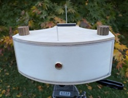
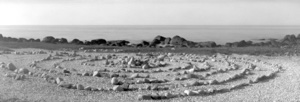
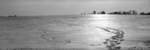
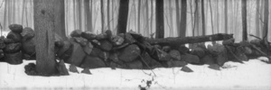

Camera #3 - 6x17 Panoramic - 120 Film

|
One of the great appeals of pinhole cameras is the flexibility that comes with building your own. They can be as plain or fancy as you want, with nearly any angle of view, or image format.
My first two pinhole cameras use traditional 4x5 and 5x7 sheet film, and have been a lot of fun. They were both straightforward and relatively simple builds, and I wanted to up my game a bit this time around. This next project grew out of a years-long yearning for a 6x17 panoramic camera. 6x17 is a rather common format in the panoramic world, and gives 4 exposures on a roll of 120 film. There are a few reasonably priced 6x17 PH cameras available, so it would have been pretty easy to sit down at the computer, click a few links, and just wait for a bit. Those cameras tend to have rather wide angles of view though, typically around 140 or 150 degrees. I wanted a much narrower 60-degree field of view, and of course I like to build things. | ||
|---|---|---|---|
|
Basic geometry ensures that the edges of a panoramic image are much further from the pinhole than the center when the film is flat. Because the amount of light reaching the film decreases with distance from the pinhole, many wide angle pinhole images darken noticeably toward the sides and corners. Similarly, the image size is affected by the distance from the pinhole.
Curving the film plane makes it possible to keep the film equidistant to the pinhole across the image, effectively preventing the vignetting. Yes, the upper and lower extremities of the image are slightly further from the pinhole than the center, and theoretically some darkening of the edges of the image will remain. Fortunately this difference is rather slight, and the result within the image is very subtle, if even noticeable. | |||
|
The camera body is primarily constructed of plywood. The top and bottom plates are 1/2-inch baltic birch, while the curved sides and back are three-layer laminations of 1/8-inch bending plywood.
The two plastic rods are expeditious framing aids, as are the pencilled lines on the camera's top. These features will soon be replaced. I installed the same shutter previously used on the 5x7, though I am still undecided about dedicating it to this camera. |
 | ||
|---|---|---|---|
| You've likely noticed that the pinhole is mounted on a movable plate. This allows rise and fall movements similar to that of a conventional large format view camera. Cameras with a curved film plane need to be level during the exposure to maintain a straight horizon. Tipping the camera up or down will "bend" the horizon in the final image. Shifting the pinhole will allow positioning the horizon away from the image center, while keeping the camera level. You can see an example of the displaced horizon in the adjacent coastal image. |  | ||
|
In the meantime, here are two more images for your enjoyment. | |
|  |  |
|---|---|
|
Copyright 2023, Thayer Syme |